|
|
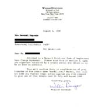
|
Mattel v. Rotten
We registered matell.com (a name similar to, but not used by
Mattel Toy Corporation) and pointed it to rotten.com's page. This did
not sit well with Mattel, when unsuspecting people looking for pages about
Barbie Dolls were finding decapitations and whatnot. And incredibly,
Mattel was concerned customers would confuse our website with theirs!
|
|
|
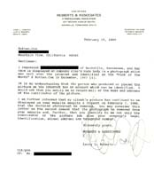
|
FOTM Winner!
This woman's face was allegedly pasted onto the top of the face of
one of our "Fuck of the Month" winners. Even so, our judges have
determined that this woman is still entitled to her Fuck of the
Month Award, if indeed she wishes to claim it.
|
|
|
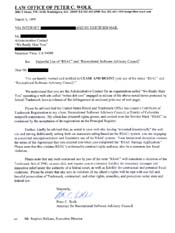
|
RSAC Ratings
About a year ago a tag was placed on rotten.com's front page rating
it at "Disney" level. This letter claims we entered into some manner
of contract (outright lie) and that somehow their trademark protection
extends to an instance where we explicitly state that they have
not endorsed our rating (second outright lie).
|
|
|
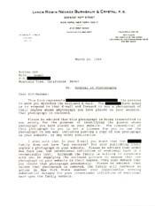
|
Loser Meets Train
The case of a family claiming that a photo on one of our pages
is their nephew. Apparently the nephew lay his head in front of
a train. Our analysis was inconclusive.
|
|
|
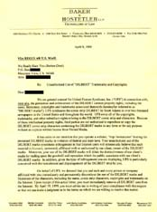
|
Pointy Haired Lawyers
Uni**d M*dia clamps d*wn on r*tten, over the par*dies of
their D*****t strip that appeared in various homoerotic and
otherwise offensive epis*des.
See part II below as to why we have to kiss their fucking asterisk.
|
|
|
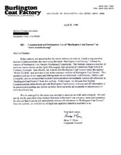
|
Trenchcoat Mafia
We registered trenchcoat.org, put up the most
ridiculous site, and Burlington Coat Factory gets
their panties in a bunch.
|
|

|
Pointy Lawyers II
Again with the pointy haired lawyers. This time they don't like us
saying the word "D*****t". Ok, fine, we won't say it. Whatever.
|
|
|
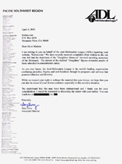
|
Achtung Bissen
The Jewish Anti-Defamation League
is upset at a picture we posted which has nothing at
all to do with Jewry or the Holocaust. Their complaint
is that it reminds them of the Holocaust.
Anyway we fully expect them to narq to Pillsbury about this.
|
|
|
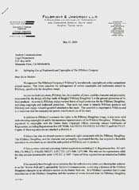
|
Pillsbury
Now Pillsbury doesn't like us.. It seems that our depiction
of Doughboy Holocaust rattled their attorneys.
How can four million doughboys be wrong?
|
|
|
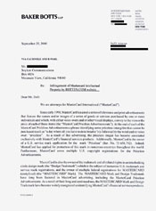
|
Mastercard Priceless
The Mastercard Corporation doesn't seem to realize the
definition of parody. Like, when we make fun of someone's
advertising campaign, it's parody. And stuff. What asses.
|
|

|
FOTM Winner #2
This one is a case of mistaken identity. Apparently
because the "model" looks like some girl, it therefore
must be her face pasted on the picture! Never mind that
the portrait of her face is taken at an angle unique
to porn, and she has her "Gene Simmons" tongue hanging out..
|
|
|
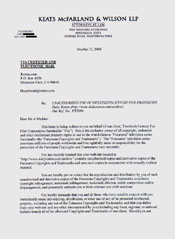
|
Futurama Porn
Ok, maybe the Futurama porn wasn't such a good idea.
Futurama is a somewhat popular Fox television show. This might
be covered by parody, but we aren't exactly Mad magazine.
|
|
|
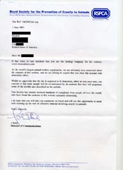
|
Bonsai Kitten
Hundreds of people complain about the Bonsai Kitten site that
we host, to the UK Royal Society for the Prevention of Cruelty
to Animals. Never mind that no cruelty occurred either in the
creation of the website or as a result from it. They think
they see kitties being abused and therefore the site must be
eradicated. The word hoax does not exist in their dictionary.
|
|
|
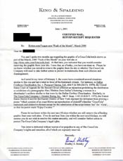
|
Coca-Cola
"It has come to our attention that your Rotten.com and Fuqqer.com websites depict
as the March, 2000 "Fuck of the Month" a picture of a Coca-Cola bottle inserted into
a woman's anus. Needless to say, this image is not consistent with the goodwill and
reputation that The Coca-Cola Company has striven over many years to associate
with its trademarks."
|
|